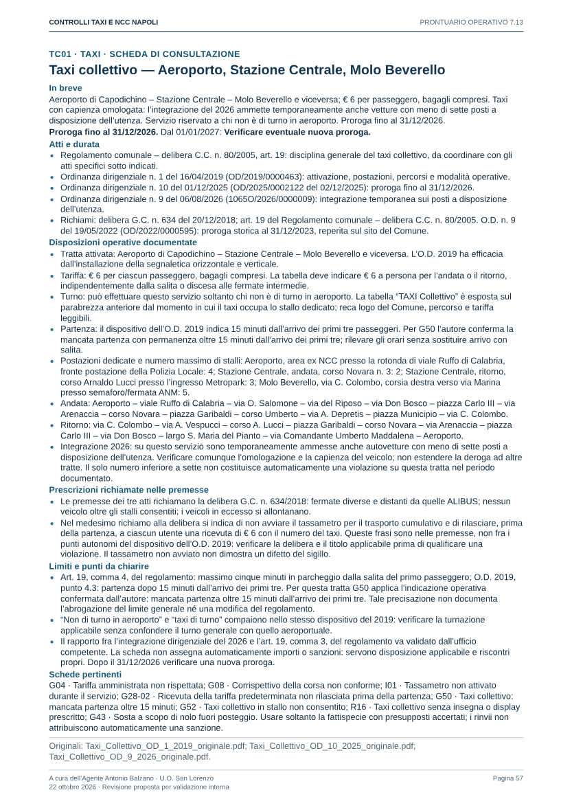

Integrazione locale 1.8.11 / PDF 7.13
Nessun commit, push o deploy. 115 voci di catalogo, incluse R01 inattiva e altre voci di consultazione; 186 schede, 207 pagine. Letti i nove allegati; estratti EGAF sintetizzati nel rapporto senza ripubblicare le schermate.
PWA locale · PDF rigenerato · Rapporto e fonti · Confronto completo
R39 · Trazione equina con condizioni incompatibili con il benessere
Prescrizione della licenza confermata dall’autore; art.70, €42/€29,40/€86,50 e ritiro. Accertamento personale e valutazione veterinaria distinti.
Prima: formula e riferimenti
Durante il servizio a trazione equina, il cavallo non veniva trattato con rispetto e dignità. Nella fattispecie […].
CdS art. 70, comma 4, secondo periodo; Regolamento comunale (delibera C.C. n. 80/2005), artt. 34–35 e 39
[["Base specifica da verificare","Da verificare","Non precompilato","Secondo la base","Secondo la base","Seguito competente"]]
Dopo: formula base
Durante il servizio a trazione equina, il cavallo non veniva trattato con rispetto e dignità. Nella fattispecie […]. Copia del presente verbale sarà inviata all’Ufficio Corso Pubblico.
PDF pagina 195
Note, alternative e attestazioni separate
- Nel campo finale distinguere i fatti personalmente osservati dagli operatori dalla valutazione del medico veterinario, con nome, data e riferimento dell’atto. Non attribuire agli operatori la diagnosi veterinaria.
- L’autore conferma che l’obbligo descritto è una prescrizione della licenza. Art. 70, comma 4, secondo periodo: accertare e descrivere la prescrizione concretamente violata, con fonte e riscontro; nessuna licenza individuale è stata acquisita in questa revisione.
- Trasmettere la licenza ritirata all’Ufficio Corso Pubblico del Comune di Napoli entro cinque giorni dal ritiro (art. 216 CdS). Il destinatario è un’indicazione organizzativa confermata dall’autore il 23 ottobre 2026, distinta dal testo normativo: non è il destinatario testualmente indicato dall’art. 216 e non è stato acquisito un nuovo atto organizzativo. L’attestazione del ritiro entra nella copia soltanto se materialmente eseguito; il ritiro dovuto resta obbligatorio.
- EGAF 070-02 sostiene questo inquadramento. 070-01 riguarda servizio senza licenza, con confisca; 070-03 riguarda revisione della vettura, distinta dall’abilitazione annuale del cavallo. Non sono ulteriori condotte attestate da questa formula.
- Solo se ritiro materialmente eseguito; non sostituisce l’obbligo di ritiro: La licenza è ritirata e sarà trasmessa all’Ufficio Corso Pubblico.
{}
R40 · Trazione equina — riscontro dell’idoneità del cavallo
Stesso inquadramento art.70; art.36 comma1 e relativa eccezione confermati; resta distinta la sola carenza documentale dall’inidoneità.
Prima: formula e riferimenti
Per il cavallo […] adibito alla trazione equina non risultava il riscontro dell’idoneità richiesta; il fatto è riportato nella relazione. In particolare […].
CdS art. 70, comma 4, secondo periodo; Regolamento comunale (delibera C.C. n. 80/2005), art. 36, comma 1; art. 36, comma 2 (eccezione)
[["Base specifica da verificare","Da verificare","Non precompilato","Secondo la base","Secondo la base","Seguito competente"]]
Dopo: formula base
Per il cavallo […] adibito alla trazione equina non risultava il riscontro dell’idoneità richiesta; il fatto è riportato nella relazione. In particolare […]. Copia del presente verbale sarà inviata all’Ufficio Corso Pubblico.
PDF pagina 196
Note, alternative e attestazioni separate
- Art. 36, comma 1: razze da tiro soggette a valutazione morfologica o di categoria di peso. Il comma 2 ammette cavalli già in esercizio di altre razze certificati dal veterinario. La mancanza sostanziale dell’idoneità è distinta dal certificato non esibito o dal riscontro documentale pendente.
- L’autore conferma che l’obbligo descritto è una prescrizione della licenza. Art. 70, comma 4, secondo periodo: accertare e descrivere la prescrizione concretamente violata, con fonte e riscontro; nessuna licenza individuale è stata acquisita in questa revisione.
- Trasmettere la licenza ritirata all’Ufficio Corso Pubblico del Comune di Napoli entro cinque giorni dal ritiro (art. 216 CdS). Il destinatario è un’indicazione organizzativa confermata dall’autore il 23 ottobre 2026, distinta dal testo normativo: non è il destinatario testualmente indicato dall’art. 216 e non è stato acquisito un nuovo atto organizzativo. L’attestazione del ritiro entra nella copia soltanto se materialmente eseguito; il ritiro dovuto resta obbligatorio.
- EGAF 070-02 sostiene questo inquadramento. 070-01 riguarda servizio senza licenza, con confisca; 070-03 riguarda revisione della vettura, distinta dall’abilitazione annuale del cavallo. Non sono ulteriori condotte attestate da questa formula.
- Solo se ritiro materialmente eseguito; non sostituisce l’obbligo di ritiro: La licenza è ritirata e sarà trasmessa all’Ufficio Corso Pubblico.
{}
R41 · Trazione equina senza abilitazione annuale o identificazione
Stesso inquadramento art.70; scelta dell’irregolarità specifica. Abilitazione annuale del cavallo distinta dalla revisione quinquennale della vettura.
Prima: formula e riferimenti
Il cavallo […] impiegato con la vettura indicata non risultava in regola con l’abilitazione annuale richiesta; il fatto è riportato nella relazione. In particolare […].
CdS art. 70, comma 4, secondo periodo; Regolamento comunale (delibera C.C. n. 80/2005), art. 37, commi 1–4; art. 39
[["Base specifica da verificare","Da verificare","Non precompilato","Secondo la base","Secondo la base","Seguito competente"]]
Dopo: formula base
Il cavallo […] impiegato con la vettura indicata non risultava in regola con l’abilitazione annuale richiesta; il fatto è riportato nella relazione. In particolare […]. Copia del presente verbale sarà inviata all’Ufficio Corso Pubblico.
PDF pagina 197
Note, alternative e attestazioni separate
- Scegliere la sola irregolarità accertata e specificarla nel campo finale, con documento, scadenza e fonte. Non mantenere un’alternativa generica irrisolta. La mancata esibizione non dimostra l’assenza dell’abilitazione; per l’identificazione verificare la disciplina e il riscontro veterinario applicabili.
- L’autore conferma che l’obbligo descritto è una prescrizione della licenza. Art. 70, comma 4, secondo periodo: accertare e descrivere la prescrizione concretamente violata, con fonte e riscontro; nessuna licenza individuale è stata acquisita in questa revisione.
- Trasmettere la licenza ritirata all’Ufficio Corso Pubblico del Comune di Napoli entro cinque giorni dal ritiro (art. 216 CdS). Il destinatario è un’indicazione organizzativa confermata dall’autore il 23 ottobre 2026, distinta dal testo normativo: non è il destinatario testualmente indicato dall’art. 216 e non è stato acquisito un nuovo atto organizzativo. L’attestazione del ritiro entra nella copia soltanto se materialmente eseguito; il ritiro dovuto resta obbligatorio.
- EGAF 070-02 sostiene questo inquadramento. 070-01 riguarda servizio senza licenza, con confisca; 070-03 riguarda revisione della vettura, distinta dall’abilitazione annuale del cavallo. Non sono ulteriori condotte attestate da questa formula.
- Solo se ritiro materialmente eseguito; non sostituisce l’obbligo di ritiro: La licenza è ritirata e sarà trasmessa all’Ufficio Corso Pubblico.
{"abilitazione":"Il cavallo […] impiegato con la vettura indicata non risultava in regola con l’abilitazione annuale richiesta; il fatto è riportato nella relazione. In particolare […].","identificazione":"Il cavallo […] impiegato con la vettura indicata presentava un’irregolarità nell’identificazione richiesta; il fatto è riportato nella relazione. In particolare […].","altra":"Il cavallo […] impiegato con la vettura indicata presentava la seguente irregolarità accertata: […]; il fatto è riportato nella relazione."}
R42 · Vettura a trazione equina con allestimento difforme
Stesso inquadramento art.70; ordinanza tecnica non acquisita, estremi da completare. La conferma dell’autore non equivale al documento.
Prima: formula e riferimenti
La vettura a trazione equina indicata presentava un allestimento difforme dall’ordinanza […]. Nella fattispecie […].
CdS art. 70, comma 4, secondo periodo; Regolamento comunale (delibera C.C. n. 80/2005), art. 38, comma 1
[["Base specifica da verificare","Da verificare","Non precompilato","Secondo la base","Secondo la base","Seguito competente"]]
Dopo: formula base
La vettura a trazione equina indicata presentava un allestimento difforme dall’ordinanza […]. Nella fattispecie […]. Copia del presente verbale sarà inviata all’Ufficio Corso Pubblico.
PDF pagina 198
Note, alternative e attestazioni separate
- L’ordinanza tecnica prevista dall’art. 38, comma 1, non è stata acquisita: indicarne estremi e prescrizione solo dopo acquisizione. Il richiamo all’O.S. 835/2014 in atti sul benessere non ne prova il contenuto tecnico.
- L’autore conferma che l’obbligo descritto è una prescrizione della licenza. Art. 70, comma 4, secondo periodo: accertare e descrivere la prescrizione concretamente violata, con fonte e riscontro; nessuna licenza individuale è stata acquisita in questa revisione.
- Trasmettere la licenza ritirata all’Ufficio Corso Pubblico del Comune di Napoli entro cinque giorni dal ritiro (art. 216 CdS). Il destinatario è un’indicazione organizzativa confermata dall’autore il 23 ottobre 2026, distinta dal testo normativo: non è il destinatario testualmente indicato dall’art. 216 e non è stato acquisito un nuovo atto organizzativo. L’attestazione del ritiro entra nella copia soltanto se materialmente eseguito; il ritiro dovuto resta obbligatorio.
- EGAF 070-02 sostiene questo inquadramento. 070-01 riguarda servizio senza licenza, con confisca; 070-03 riguarda revisione della vettura, distinta dall’abilitazione annuale del cavallo. Non sono ulteriori condotte attestate da questa formula.
- Solo se ritiro materialmente eseguito; non sostituisce l’obbligo di ritiro: La licenza è ritirata e sarà trasmessa all’Ufficio Corso Pubblico.
{}
G46 · Pausa al posteggio: disco orario o posizione nello stallo
Disco e ultimo posto conservati come indicazioni operative confermate, con tre alternative. O.S.11/2010 integrale ancora mancante.
Prima: formula e riferimenti
Durante la pausa nel posteggio […], lasciava il veicolo indicato, con C.P. n. […], senza esporre il disco orario prescritto dall’ordinanza vigente.
CdS art. 86, comma 3-bis; O.S. n. 11/2010 (testo integrale da acquisire)
[["Base da verificare","Da qualificare","Da verificare","Da verificare","Secondo la base","Seguito dell’ufficio"]]
Dopo: formula base
Durante la pausa nel posteggio […], lasciava il veicolo indicato, con C.P. n. […], senza esporre il disco orario prescritto dall’ordinanza vigente.
PDF pagina 51
Note, alternative e attestazioni separate
- Disco orario e collocazione nell’ultimo posto dello stallo sono mantenuti secondo l’indicazione operativa confermata dall’autore. Scegliere una condotta o entrambe solo se effettivamente accertate.
- Il testo integrale dell’O.S. 11/2010 resta da acquisire; la conferma dell’autore non è acquisizione dell’atto. Per l’art. 86, comma 3-bis, documentare la specifica condizione della licenza e i presupposti, escludendo i commi 2 e 3.
- Per l’art. 86, comma 3-bis, verificare la specifica condizione della licenza e la sua efficacia; escludere i commi 2 e 3. La sola violazione del regolamento non basta.
- Formula per relazione: aggiungere la frase di invio del verbale soltanto se un verbale è effettivamente elevato su base verificata. L’invio al futuro non attesta una trasmissione già eseguita.
- Solo per verbale effettivamente elevato — invio ancora da effettuare: Copia del presente verbale sarà inviata all’Ufficio Corso Pubblico.
{"disco":"Durante la pausa nel posteggio […], lasciava il veicolo indicato, con C.P. n. […], senza esporre il disco orario prescritto dall’ordinanza vigente.","posizione":"Durante la pausa nel posteggio […], lasciava il veicolo indicato, con C.P. n. […], senza collocare il veicolo nell’ultimo posto dello stallo prescritto dall’ordinanza vigente.","entrambe":"Durante la pausa nel posteggio […], lasciava il veicolo indicato, con C.P. n. […], senza esporre il disco orario e senza collocare il veicolo nell’ultimo posto dello stallo, come prescritto dall’ordinanza vigente."}
G47 · Pausa al posteggio oltre il tempo consentito
Applicati 30 minuti secondo l’autore; due orari per durata osservata. Testo integrale O.S.11/2010 ancora da acquisire.
Prima: formula e riferimenti
Nel posteggio […], lasciava il veicolo indicato, con C.P. n. […], in pausa dalle ore […] alle ore […], oltre il limite di […] minuti previsto dall’ordinanza […].
CdS art. 86, comma 3-bis; O.S. n. 11/2010 (testo integrale da acquisire)
[["Base da verificare","Da qualificare","Da verificare","Da verificare","Secondo la base","Seguito dell’ufficio"]]
Dopo: formula base
Nel posteggio […], lasciava il veicolo indicato, con C.P. n. […], in pausa dalle ore […] alle ore […], oltre il limite di 30 minuti previsto dall’ordinanza […].
PDF pagina 52
Note, alternative e attestazioni separate
- Limite di pausa di 30 minuti secondo l’indicazione operativa confermata dall’autore. Annotare inizio e permanenza finale osservati e fonte del rilievo; non dedurre la durata dal solo veicolo trovato in sosta.
- Il testo integrale dell’O.S. 11/2010 resta da acquisire: il limite è applicato come indicazione dell’autore, senza presentarlo come documentalmente riscontrato. Per l’art. 86, comma 3-bis, documentare la condizione della licenza; esclusi i commi 2 e 3.
- Per l’art. 86, comma 3-bis, verificare la specifica condizione della licenza e la sua efficacia; escludere i commi 2 e 3. La sola violazione del regolamento non basta.
- Formula per relazione: aggiungere la frase di invio del verbale soltanto se un verbale è effettivamente elevato su base verificata. L’invio al futuro non attesta una trasmissione già eseguita.
- Solo per verbale effettivamente elevato — invio ancora da effettuare: Copia del presente verbale sarà inviata all’Ufficio Corso Pubblico.
{}
G48 · Cambio turno: cartellini identificativi non esposti
Acquisito integralmente OD3/2021, registrazione OD/2021/0000298. Esposizione sui due vetri: punto 3.D.2 del 2019 riportato a p.4; sospensione cambio turno 6/12/24 mesi sul conducente: dispositivo 2021 punti 1–2.
Prima: formula e riferimenti
In occasione del cambio turno […], sul veicolo indicato con C.P. n. […], non esponeva la vetrofania prescritta dall’ordinanza vigente.
CdS art. 86, comma 3-bis; O.D. n. 3 del 22/03/2021 (testo integrale da acquisire)
[["Base da verificare","Da qualificare","Da verificare","Da verificare","Secondo la base","Seguito dell’ufficio"]]
Dopo: formula base
In occasione del cambio turno […], sul veicolo indicato con C.P. n. […], non esponeva sul vetro anteriore il cartellino identificativo prescritto.
PDF pagina 53
Note, alternative e attestazioni separate
- Documento acquisito: O.D. n. 3 del 22/03/2021, registrazione OD/2021/0000298. A p. 4 riporta la disciplina O.D. 178 del 13/02/2019, punto 3.D.2: cartellini ben visibili sul vetro anteriore e posteriore. L’originale autonomo 2019 e i prototipi non sono acquisiti.
- La formula riguarda la mancata esposizione: scegliere anteriore, posteriore o entrambi secondo il riscontro. Alterazione o contraffazione dei cartellini è una condotta distinta, da documentare e qualificare separatamente; non attestare un falso dalla sola assenza.
- Dispositivo 2021, punti 1 e 2, p. 5: sospensione del diritto al cambio turno per 6/12/24 mesi alla prima/seconda/terza infrazione, riferita al conducente autore, titolare o sostituto. Riscontrare precedenti pertinenti; provvedimento dell’autorità competente, non sospensione della licenza né adozione automatica degli operatori. Punto 3: anzianità per il cambio turno ridotta a 12 mesi.
- Per l’art. 86, comma 3-bis, verificare la specifica condizione della licenza e la sua efficacia; escludere i commi 2 e 3. La sola violazione del regolamento non basta.
- Formula per relazione: aggiungere la frase di invio del verbale soltanto se un verbale è effettivamente elevato su base verificata. L’invio al futuro non attesta una trasmissione già eseguita.
- Solo per verbale effettivamente elevato — invio ancora da effettuare: Copia del presente verbale sarà inviata all’Ufficio Corso Pubblico.
{"anteriore":"In occasione del cambio turno […], sul veicolo indicato con C.P. n. […], non esponeva sul vetro anteriore il cartellino identificativo prescritto.","posteriore":"In occasione del cambio turno […], sul veicolo indicato con C.P. n. […], non esponeva sul vetro posteriore il cartellino identificativo prescritto.","entrambi":"In occasione del cambio turno […], sul veicolo indicato con C.P. n. […], non esponeva i cartellini identificativi prescritti né sul vetro anteriore né su quello posteriore."}
G49 · Taxi fuori servizio nello stallo riservato
Applicata l’indicazione operativa sugli stalli solo per taxi in servizio; €165/€115,50/€330, rimozione e 2 punti. Verifica concreta di segnaletica e pausa autorizzata.
Prima: formula e riferimenti
Con il veicolo indicato, con C.P. n. […], sostava fuori servizio nello spazio riservato ai taxi.
CdS art. 158, comma 2, lett. d e comma 5-bis; CdS art. 159, comma 1, lett. b; CdS art. 126-bis e tabella allegata; D.Lgs. 19 novembre 1997, n. 422, art. 14, comma 6; Regolamento comunale (delibera C.C. n. 80/2005), art. 26
[["Base da verificare","Da qualificare","Da verificare","Da verificare","Secondo la base","Seguito dell’ufficio"]]
Dopo: formula base
Con il veicolo indicato, con C.P. n. […], sostava fuori servizio nello spazio riservato ai taxi. Copia del presente verbale sarà inviata all’Ufficio Corso Pubblico.
PDF pagina 54
Note, alternative e attestazioni separate
- L’autore conferma l’impostazione operativa: negli stalli taxi possono sostare soltanto taxi in servizio. Applicarla al caso concreto dopo verifica della segnaletica e dello stato del servizio; distinguere il fuori servizio da una pausa autorizzata.
- Art. 158, comma 2, lett. d e comma 5-bis: € 165–660; PMR € 165; € 115,50 entro cinque giorni ex art. 202. € 330 ex art. 203, comma 3, in assenza di pagamento e ricorso, oltre spese. Rimozione ex art. 159, comma 1, lett. b; 2 punti ex tabella art. 126-bis.
- Il D.Lgs. 422/1997, art. 14, comma 6, consente l’uso proprio fuori servizio, senza autorizzare automaticamente la sosta nello spazio riservato al servizio. La regola operativa sull’uso degli stalli deriva dalla precisazione dell’autore; non è stata acquisita una nuova ordinanza locale su tale punto.
{}
G50 · Taxi collettivo: mancata partenza oltre 15 minuti
Formula esatta: mancata partenza oltre 15 minuti dall’arrivo dei primi tre. Due orari separati dalla copia. Atti2019/2025/2026 conservati.
Prima: formula e riferimenti
Nel servizio taxi collettivo, con il veicolo indicato e C.P. n. […], i primi tre passeggeri arrivavano alle ore […]; il veicolo permaneva in attesa alle ore […].
CdS art. 86, comma 3-bis; Regolamento comunale (delibera C.C. n. 80/2005), art. 19, comma 4; O.D. n. 1 del 16/04/2019; O.D. n. 10 del 01/12/2025; O.D. n. 9 del 06/08/2026
[["Taxi art.86 c.3-bis","86–338","86","60,20","169","Nessuna accessoria CdS"]]
Dopo: formula base
Nel servizio taxi collettivo, con il veicolo indicato e C.P. n. […], permaneva in attesa senza partire oltre 15 minuti dall’arrivo dei primi tre passeggeri. Copia del presente verbale sarà inviata all’Ufficio Corso Pubblico.
PDF pagina 55
Note, alternative e attestazioni separate
- Condotta confermata dall’autore: mancata partenza con permanenza in attesa oltre 15 minuti dall’arrivo dei primi tre passeggeri. O.D. 1/2019, punto 4.3, p. 2; non sostituire arrivo con salita.
- Campi di accertamento: arrivo dei primi tre alle ore […]; permanenza senza partenza accertata alle ore […]; fonte del rilievo […]. Verificare che siano trascorsi più di 15 minuti.
- Tratta Aeroporto–Stazione Centrale–Molo Beverello; O.D. 10/2025 proroga al 31/12/2026 e O.D. 9/2026 integrazione temporanea sui posti conservate. Il diverso limite generale dell’art. 19, comma 4, e gli ulteriori quesiti TC01 restano distinti: l’indicazione operativa non riscrive il regolamento né prova atti non acquisiti.
- Per l’art. 86, comma 3-bis, verificare la specifica condizione della licenza e la sua efficacia; escludere i commi 2 e 3. La sola violazione del regolamento non basta.
{}
G52 · Taxi collettivo in stallo non consentito
Stalli già documentalmente individuati al punto2: precisata distinzione da segnaletica sul posto e modifiche successive. Tabella conservata.
Prima: formula e riferimenti
Con il veicolo indicato, con C.P. n. […], effettuava servizio taxi collettivo fuori dagli stalli consentiti dall’ordinanza vigente. Copia del presente verbale sarà inviata all’Ufficio Corso Pubblico.
CdS art. 86, comma 3-bis; Regolamento comunale (delibera C.C. n. 80/2005), art. 19; O.D. n. 1 del 16/04/2019; O.D. n. 10 del 01/12/2025; O.D. n. 9 del 06/08/2026
[["Taxi art.86 c.3-bis","86–338","86","60,20","169","Nessuna accessoria CdS"]]
Dopo: formula base
Con il veicolo indicato, con C.P. n. […], effettuava servizio taxi collettivo fuori dagli stalli consentiti dall’ordinanza vigente. Copia del presente verbale sarà inviata all’Ufficio Corso Pubblico.
PDF pagina 56
Note, alternative e attestazioni separate
- Art. 86, comma 3-bis: individuare specifica condizione della licenza, fonte ed efficacia; escludere i commi 2 e 3. L’ordinanza da sola non dimostra l’incorporazione nel titolo.
- O.D. 1/2019, punti 2 e 5: Aeroporto, area ex NCC presso rotonda viale Ruffo di Calabria, 4 posti; corso Novara n. 3, 2; corso Arnaldo Lucci presso ingresso Metropark, 3; Molo Beverello, via C. Colombo presso semaforo/fermata ANM, 5. Efficacia dall’installazione della segnaletica. Proroga O.D. 10/2025 al 31/12/2026; integrazione posti O.D. 9/2026. Verificare segnaletica e atti successivi del luogo; coordinare con TC01.
- Gli stalli sono documentalmente individuati al punto 2 dell’O.D. 1/2019. La verifica sul posto della segnaletica e di eventuali modifiche successive resta distinta: non è sconosciuta l’individuazione dell’atto.
{}
I01 · Tassametro non attivato durante il servizio
Formula e note della 1.8.10 conservate; nessuna chiusura al Corso Pubblico.
Prima: formula e riferimenti
All’inizio della corsa […], con il veicolo indicato e C.P. n. […], non attivava il tassametro.
CdS art.86 c.3-bis; Regolamento comunale (delibera C.C. n. 80/2005), art. 23 c.1 m
[["Taxi art.86 c.3-bis","86–338","86","60,20","169","Nessuna accessoria CdS"]]
Dopo: formula base
All’inizio della corsa […], con il veicolo indicato e C.P. n. […], non attivava il tassametro.
PDF pagina 58
Note, alternative e attestazioni separate
- Conservare l’eccezione della tariffa predeterminata legittimamente richiesta; per il collettivo verificare gli atti e TC01. Non attesta un illecito la sola mancata attivazione nei casi in cui non è dovuta.
- Voce aggiunta dal regolamento fornito; non era una scheda autonoma nell’originale.
- I punti e i provvedimenti dell’art.29 riguardano la licenza comunale; non sono punti della patente o atti già disposti.
- Per l’art. 86, comma 3-bis, verificare la specifica condizione della licenza e la sua efficacia; escludere i commi 2 e 3. La sola violazione del regolamento non basta.
{}
I09 · Sostituzione taxi con comunicazione irregolare
Applicata la compilazione tecnica richiesta: titolare in entrambi i campi e conducente diverso in altri soggetti. Nessuna deduzione di solidarietà con sé stesso o sanzione al titolare non conducente.
Prima: formula e riferimenti
Il titolare del C.P. n. […] impiegava il sostituto […] senza […].
CdS art.86 c.3-bis; Regolamento comunale (delibera C.C. n. 80/2005), art. 7 cc.2-4
[["Taxi art.86 c.3-bis","86–338","86","60,20","169","Nessuna accessoria CdS"]]
Dopo: formula base
Il titolare del C.P. n. […] impiegava il sostituto […] senza […].
PDF pagina 59
Note, alternative e attestazioni separate
- Compilazione del gestionale secondo l’indicazione dell’autore: titolare della licenza nel campo trasgressore; medesimo titolare nel campo obbligato solidale; conducente nel campo altri soggetti, se persona diversa. La duplicazione dei campi è tecnica, non prova che una persona sia solidale con sé stessa.
- Accertare la responsabilità personale dell’omissione e quale comunicazione o documento manca. Art. 7 comunale: comunicazione immediata, documentazione entro 48 ore; verificare cooperativa o consorzio per licenza conferita. Seconda guida in turno aggiuntivo distinta: T01.
- L’art. 86, comma 3-bis, riguarda chi guida: nessuna sanzione al titolare non conducente è dedotta dalla compilazione del gestionale. Restano da chiarire identificativi dei ruoli e produzione del verbale nel gestionale; nessun manuale o disposizione del gestionale acquisito.
- Per l’art. 86, comma 3-bis, verificare la specifica condizione della licenza e la sua efficacia; escludere i commi 2 e 3. La sola violazione del regolamento non basta.
- Formula per relazione: aggiungere la frase di invio del verbale soltanto se un verbale è effettivamente elevato su base verificata. L’invio al futuro non attesta una trasmissione già eseguita.
- Solo per verbale effettivamente elevato — invio ancora da effettuare: Copia del presente verbale sarà inviata all’Ufficio Corso Pubblico.
{}
R01 · Prelievo radiotaxi fuori dal punto segnalato
Scheda consultabile con stato esplicito di futura applicabilità; autore comunica che i punti non sono installati. Stato visibile anche nei risultati.
Prima: formula e riferimenti
Con il veicolo indicato, con C.P. n. […], prelevava l’utente per la chiamata radiotaxi fuori dai punti “prelievo chiamata radiotaxi” predisposti con apposita segnaletica.
CdS art.86 c.3-bis; Regolamento comunale (delibera C.C. n. 80/2005), art. 4 c.6
[["Taxi art.86 c.3-bis","86–338","86","60,20","169","Nessuna accessoria CdS"]]
Dopo: formula base
Con il veicolo indicato, con C.P. n. […], prelevava l’utente per la chiamata radiotaxi fuori dai punti “prelievo chiamata radiotaxi” predisposti con apposita segnaletica.
PDF pagina 60
Note, alternative e attestazioni separate
- L’autore comunica che i punti radiotaxi non sono attualmente installati. Scheda conservata per consultazione e futura attivazione: applicabile soltanto dopo l’istituzione e l’attivazione dei punti con apposita segnaletica.
- Art. 4, comma 6, del regolamento: attesa degli utenti e punti presso stazioni ferroviarie, marittime e aeroportuali; i 50 metri riguardano la localizzazione dei punti. In assenza dei punti non presentare la condotta come attualmente contestabile. Eventuale futura applicazione richiede atto, segnaletica attiva e precisa base riferita al conducente.
- Per l’art. 86, comma 3-bis, verificare la specifica condizione della licenza e la sua efficacia; escludere i commi 2 e 3. La sola violazione del regolamento non basta.
{}
R07 · Colore della vettura taxi non conforme
Formula con difformità e prescrizione conservata dalla 1.8.10.
Prima: formula e riferimenti
Il veicolo indicato, con C.P. n. […], aveva colorazione difforme dalle prescrizioni imposte dalla normativa vigente. Difformità e prescrizione violata: […]. Copia del presente verbale sarà inviata all’Ufficio Corso Pubblico.
CdS art.86 c.3-bis; Regolamento comunale (delibera C.C. n. 80/2005), art. 17 c.1 a
[["Taxi art.86 c.3-bis","86–338","86","60,20","169","Nessuna accessoria CdS"]]
Dopo: formula base
Il veicolo indicato, con C.P. n. […], aveva colorazione difforme dalle prescrizioni imposte dalla normativa vigente. Difformità e prescrizione violata: […]. Copia del presente verbale sarà inviata all’Ufficio Corso Pubblico.
PDF pagina 61
Note, alternative e attestazioni separate
- Indicare difformità concreta e prescrizione applicabile al mezzo, considerando il regime del veicolo e del titolo.
- Il requisito va riferito alle autovetture e alla disciplina applicabile al mezzo.
- L’art.29 non elenca la lettera a del comma 1: nessun gruppo disciplinare per analogia.
- Per l’art. 86, comma 3-bis, verificare la specifica condizione della licenza e la sua efficacia; escludere i commi 2 e 3. La sola violazione del regolamento non basta.
{}
R08 · Contrassegno luminoso TAXI sul tetto assente
Formula e distinzioni operative conservate dalla 1.8.10.
Prima: formula e riferimenti
Durante il servizio taxi, il veicolo indicato con C.P. n. […] era privo del contrassegno luminoso TAXI sul tetto. Copia del presente verbale sarà inviata all’Ufficio Corso Pubblico.
CdS art.86 c.3-bis se condizione del titolo; Regolamento comunale (delibera C.C. n. 80/2005), art. 17 c.1 b
[["Taxi art.86 c.3-bis","86–338","86","60,20","169","Nessuna accessoria CdS"]]
Dopo: formula base
Durante il servizio taxi, il veicolo indicato con C.P. n. […] era privo del contrassegno luminoso TAXI sul tetto. Copia del presente verbale sarà inviata all’Ufficio Corso Pubblico.
PDF pagina 62
Note, alternative e attestazioni separate
- Distinguere assenza materiale del contrassegno da segnale spento in servizio notturno e occultamento lecito durante l’uso proprio.
- EGAF nota 12 indica l’assenza del contrassegno luminoso come esempio residuale.
- Distinguere assenza materiale, mancata illuminazione notturna e occultamento durante uso privato.
- Per l’art. 86, comma 3-bis, verificare la specifica condizione della licenza e la sua efficacia; escludere i commi 2 e 3. La sola violazione del regolamento non basta.
{}
TC01
Aggiornati partenza e rinvio G50 secondo la precisazione dell’autore. Proroga2025, integrazione 2026 e quesiti estranei conservati.
Confronto completo delle note